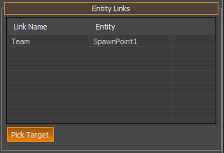

Обзор
В Sandbox можно связать объект с другими объектами. Дополнительную информацию об этой функции можно найти в руководстве Sandbox в разделе Группировка и связывание объектов.
Эти ссылки организованы внутри Entity System. Каждая сущность может быть связана с несколькими сущностями. Каждая ссылка имеет связанное с ней имя.

Пример сценария
Следующий скрипт Lua соберет из системы сущностей любую ссылку на другую сущность с именем «Генератор».
function RadarBase:IsPowered()
local i=0;
local link = self:GetLinkTarget("Generator", i);
while (link) do
Log("Generator %s", link:GetName());
if (link:GetState() == "PowerOn") then
if (link.PowerConnect) then
link:PowerConnect(self.id);
return true;
end
end
i=i+1;
link=self:GetLinkTarget("Generator", i);
end
return false;
end
Функции скрипта
Функции ScriptBind, связанные с ссылками на сущности, перечислены в ScriptBind_Entity.
Следующие функции будут читать или создавать ссылки на сущности:
- CountLinks
- CreateLink
- GetLink
- GetLinkName
- GetLinkTarget
- RemoveAllLinks
- RemoveLink
- SetLinkTarget